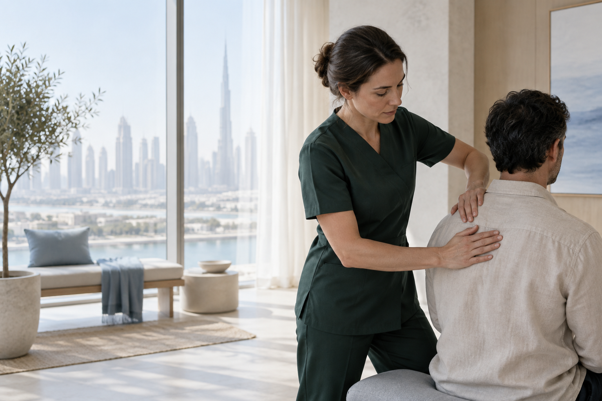
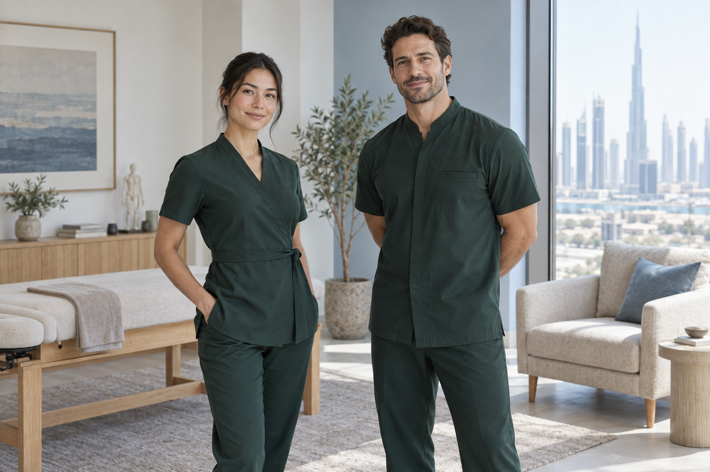
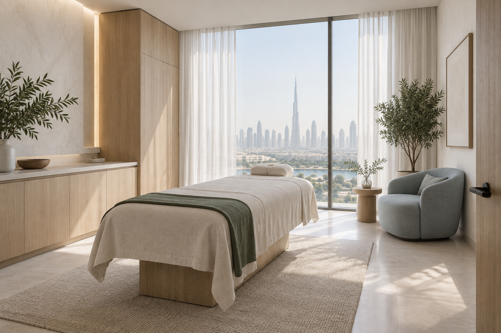
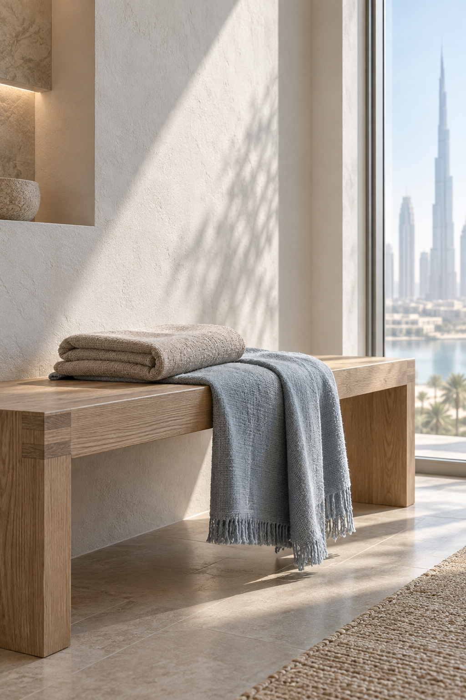

Массаж спины
Снимаем накопленное напряжение и помогаем вернуть свободу движения.

Точная работа с тем, что сейчас важно: напряжение, нагрузка или потребность в паузе. Начинаем с разговора и подбираем подход под вас.

В хорошем восстановлении нет лишнего. Есть внимание к человеку, знание тела и пространство, где можно остановиться.
Уточняем ваше состояние и цель, чтобы работа отвечала реальному запросу.
Опираемся на знание анатомии и выбираем нужную интенсивность.
Сохраняем комфорт, приватность и время на восстановление.
Техника важна. Доверие появляется в том, как специалист слышит вас, объясняет ход работы и замечает отклик тела.

Вы можете спокойно рассказать, что беспокоит. Мы вместе определим, какой способ работы подходит сейчас.
В финальной версии здесь будут опубликованы реальные отзывы клиентов после согласования.
«Стало легче двигаться и понятнее, как заботиться о себе между визитами».
Свет, воздух и материалы помогают переключиться с городского ритма на свое самочувствие.


Если ваш запрос требует отдельного разговора, расскажите нам о нём при записи.
Расскажите о самочувствии и целях. Мы поможем выбрать направление, которое подходит именно вам.
Продолжительность зависит от выбранной работы и вашего запроса. Уточним детали перед визитом.
Специальная подготовка не нужна. Приходите немного раньше, чтобы спокойно обсудить ваши ожидания.
Свяжитесь с нами заранее, и мы предложим другое доступное время.
Оставьте контакты и пару деталей о себе. Мы свяжемся с вами, обсудим запрос и предложим время.